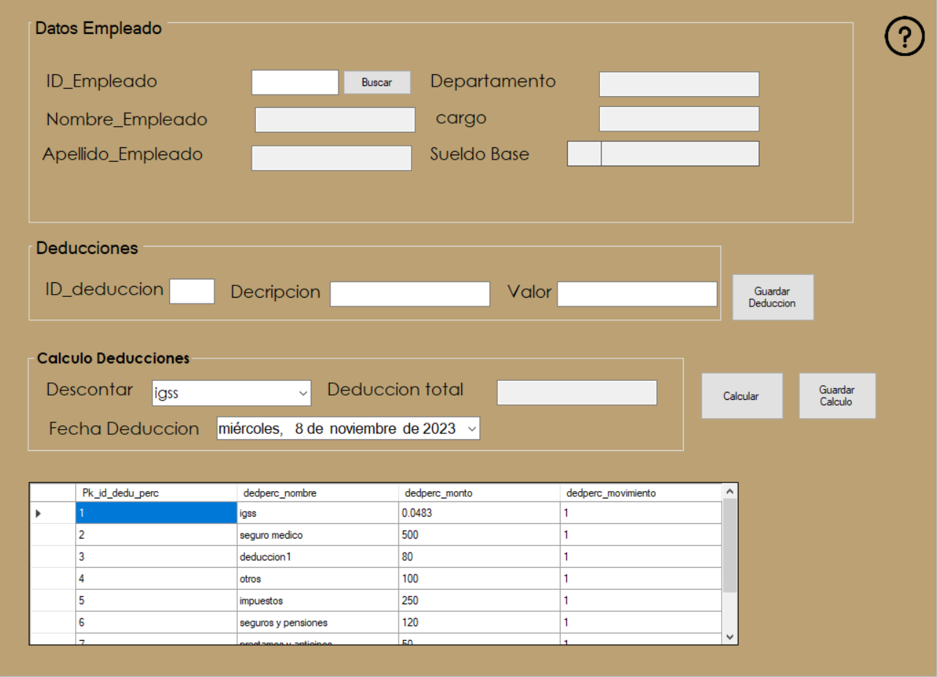
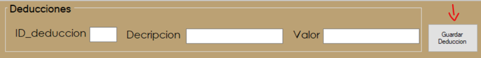
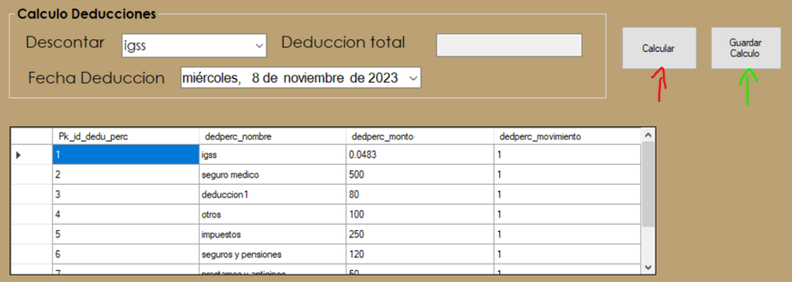

Ayuda Deduccion Nominas


El proceso de deducciones se refiere a la reducción de ciertas cantidades de dinero del salario de un empleado antes de que se le pague su salario neto
En este apartado se puede buscar al empleado que se desea aplicar la deducciones se obtiene sus datos personales como el departamento al que pertenece y su salario.

En este apartado se puede introducir el valor del id de la deduccion que queramos se incluye una descripcion y el valor ya sea entero o de la siguiente manera para porcentajes 4.83% = 0.0483 para terminar se debe oprimir el boton de "Guardar Deduccion" y se guardara la deduccion en la base de datos.
En este apartado es donde se realiza la suma del total de deducciones a aplicar al empleado, en "Descontar" se desplegaran varias opciones de deducciones disponibles, en "Deduccion Total" va a ir apareciendo el total a deducir al empleado, cada vez que se le de al boton calcular se ira sumando la deduccion total una vez estemos seguros podemos presionar el boton de Guardar Calculo para guardar la deduccion.
